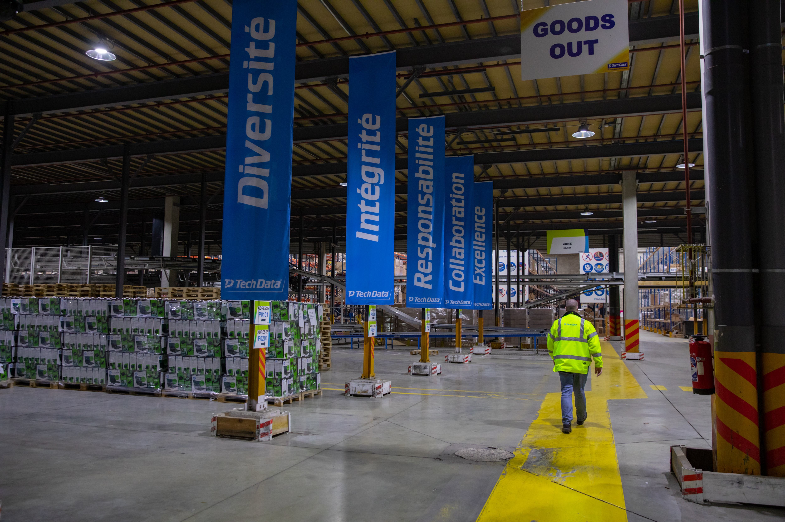

tous contrats confondus
chaque rentrée
un métier Sales chez Tech Data
Reconnu meilleur distributeur IT multi-spécialiste depuis plusieurs années.
Nous vous offrons l’opportunité de faire la différence, au sein d’une organisation passionnée, partageant la culture de la réussite et du challenge.
Rejoignez un environnement de travail de qualité où vous donnerez du sens à ce que vous faites.
Réinventez votre quotidien et boostez votre carrière !
Vivez l’expérience Tech Data !
Nos métiers Commerciaux
Spécialiste sur une marque ou une typologie de solution et/ou produits, vous êtes le premier point de contact de vos clients. En utilisant vos connaissances spécialisées sur les produits/solutions vous assurez la satisfaction de vos partenaires et développer de nouvelles opportunités commerciales. Vous êtes l'ambassadeur de Tech Data.
Métiers : Commercial Sédentaire, Ingénieur Commercial Terrain, Commercial Sédentaire Spécialiste, Business Development Executive, Business Development Manager...
Nos métiers Marketing
Au sein de notre agence de communication en interne ou directement au sein d'une business unit, vous assurez la liaison entre les fournisseurs et les équipes commerciales pour créer des campagnes de marketing et communication conçues pour stimuler la croissance du business.
Vous coordonnez la collaboration avec les marques que vous portez, les équipes techniques et avec toutes les fonctions commerciales de Tech Data, pour garantir les meilleures actions marketing, tout en pilotant les processus, les données financières et les reportings de votre segment de produits.
Métiers : Category Manager, Vendor Marketing Management...

Nos métiers Digital
Vous apportez des conseils techniques et vous êtes responsable du modèle de données de nos solutions analytiques et de notre entrepôt de données.
Vous êtes expert.e dans la mise en œuvre et l'exploitation de solutions de flux de données, de l'ingestion des données à leur consommation. L'équipe Digital identifie, rassemble et assure des connexions de données fiables à partir d'ensembles de données, afin de soutenir et de permettre de réaliser des initiatives commerciales clés et leur permettre d’être autonomes et à l'aise pour répondre aux besoins en données de nos équipes, systèmes et produits.
Vous collaborez avec toutes les équipes internes pour accompagner le business.
Métiers du Digital : Data Analyst, Business Intelligent, Ingénieur Data, E-Commerce, CRM...
Nos métiers Logistiques
Vous travaillez au sein de l'entrepôt Tech Data pour assurer une manutention efficace, sûre et précise des stocks et la prestation d'un service de haute qualité à tous nos clients.
Vous collaborez avec tous les métiers de la Supply Chain et les équipes commerciales.
Métiers de la Logistique : Opérateur Logistique, Cariste, Ordonnancement, Réception / Rangement, Expédition...
Nos métiers Techniques
Vous soutenez les équipes commerciales dans le développement de nouvelles opportunités de vente par la mise à disposition et l'application d'une expertise et de connaissances techniques de nos produits et solutions.
Métiers Techniques : Ingénieur Avant-Vente

Nos métiers Fonctions Supports
Tech Data c'est aussi des équipes opérationnelles qui sont support au business au quotidien : Achats, Service Client, Administration des Ventes, Pricing et Cotation.
Mais aussi, l'IT, les Ressources Humaines, la Finance, Juridique, Projets, Communication Interne et Externe, Workplace Management, QHSE…